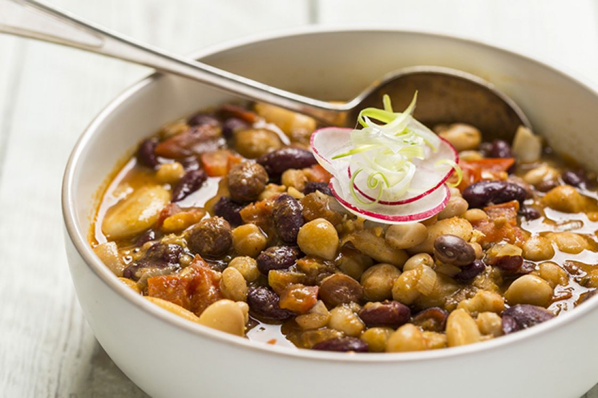

Buff Momo
Nepali Buff Momos known for their juicy and flavorful filling made from buffalo meat.

Selroti
Selroti is a traditional Nepali homemade, sweet, ring-shaped rice bread/doughnut.

Kwati (Beans sprout soup)
Kwati is a traditional Nepali soup made from a mix of nine different types of sprouted beans.

Onion Pakora
Nepali onion pakora, also known as "pyaaji," is a crispy and flavorful snack made by deep-frying thinly sliced onions coated in a spiced gram flour batter.
Yomari (Rice flour dumpling)
Yomari is a traditional steamed dumpling from Nepal, particularly cherished by the Newar community., it is shaped like a conch shell and filled with a sweet mixture

Khasi ko bhutan
Khasi ko Bhutan is a popular Nepali dish made from goat's internal organ enjoyed during festivals like Dashain and Tihar.